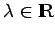
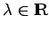

Inhalt Index DeskTop Bronstein

 Funktionalanalysis Stetige lineare Operatoren und Funktionale Trennung konvexer Mengen
Funktionalanalysis Stetige lineare Operatoren und Funktionale Trennung konvexer Mengen


Man nennt zwei Teilmengen A, B eines reellen normierten Raumes  durch eine Hyperebene trennbar, wenn ein Funktional
durch eine Hyperebene trennbar, wenn ein Funktional  existiert, so daß gilt:
existiert, so daß gilt:
ist die trennende Hyperebene, was nichts anderes besagt, als daß die Mengen in den verschiedenen Halbräumen
liegen. In den folgenden zwei Abbildungen sind zwei Fälle der Trennung durch eine Hyperebene dargestellt.
Entscheidend für die Trennung zweier Mengen ist weniger ihre Disjunktheit. In der nächsten Abbildung sind zwei Mengen E und B dargestellt, die nicht trennbar sind, obwohl E und B disjunkt sind und B konvex. Vielmehr ist die Konvexität der Mengen von Bedeutung, da nicht ausgeschlossen ist, daß beide zu trennenden Mengen gemeinsame Punkte besitzen, durch die die Hyperebene verläuft.
Es gilt: Ist A eine konvexe Menge eines normierten Raumes  mit nichtleerem Inneren Int(A) und eine nichtleere konvexe Menge mit , dann sind A und B trennbar. Die Bedingung kann in diesem Trennungssatz nicht weggelassen werden (s. 12.3, Beispiel 4.47).
mit nichtleerem Inneren Int(A) und eine nichtleere konvexe Menge mit , dann sind A und B trennbar. Die Bedingung kann in diesem Trennungssatz nicht weggelassen werden (s. 12.3, Beispiel 4.47).
Ein (reelles) lineares Funktional  heißt Stützfunktional an die Menge A im Punkt , wenn es eine solche Zahl  gibt, für die und gilt. heißt dann Stützhyperebene im Punkt x0 an
heißt Stützfunktional an die Menge A im Punkt , wenn es eine solche Zahl  gibt, für die und gilt. heißt dann Stützhyperebene im Punkt x0 an  . Für eine konvexe Menge K mit nichtleerem Inneren existiert in jedem ihrer Randpunkte ein Stützfunktional.
. Für eine konvexe Menge K mit nichtleerem Inneren existiert in jedem ihrer Randpunkte ein Stützfunktional.
Auf der Trennbarkeit konvexer Mengen beruht der Beweis der KUHN-TUCKER-Bedingungen, aus denen sich praktische Verfahren zur Bestimmung des Minimums eines konvexen Optimierungsproblems herleiten lassen (s. Lit. 12.5).